소방설비산업기사(전기) (2017-03-05 기출문제)
1과목: 소방원론
1. 제3종 분말소화약제의 주성분으로 옳은 것은?
- 탄산수소나트륨
- 제1인산암모늄
- 탄산수소칼륨
- 탄산수소칼륨과 요소
(정답률: 90%)

2. 실내온도 15℃에서 화재가 발생하여 900℃가 되었다면 기체의 부피는 약 몇배로 팽창되는가?
- 2.23
- 4.07
- 6.45
- 8.⑤
(정답률: 71%)
3. 수소 1kg 이 완전연소할 때 필요한 산소량은 몇 kg 인가?
- 4
- 8
- 16
- 32
(정답률: 53%)
4. 일반적인 화재에서 연소 불꽃 온도가 1500℃이었을 때의 연소 불꽃의 색상은?
- 휘백색
- 적색
- 휘적색
- 암적색
(정답률: 89%)
5. 황린과 적린이 서로 동소체라는 것을 증명하는 가장 효과적인 실험은?
- 비중을 비교한다.
- 착화점을 비교한다.
- 유기용제에 대한 용해도를 비교한다.
- 연소생성물을 확인한다.
(정답률: 79%)
6. 숯, 코크스가 연소하는 형태에 해당하는 것은?
- 분무연소
- 예혼합연소
- 표면연소
- 분해연소
(정답률: 89%)
7. 상온∙상압상태에서 기체로 존재하는 할로겐 화합물로만 연결된 것은?
- Halon 2402, Halon 1211
- Halon 1211, Halon 1011
- Halon 1301, Halon 1011
- Halon 1301, Halon 1211
(정답률: 68%)
8. 위험물의 유별에 따른 대표적인 성질의 연결이 틀린 것은?
- 제1류-산화성고체
- 제2류-가연성고체
- 제4류-인화성액체
- 제5류-산화성액체
(정답률: 86%)
9. 건축물의 주요구조부에 해당하는 것은?
- 내력벽
- 작은 보
- 옥외 계단
- 사이 기둥
(정답률: 83%)
10. 다음중 발화점(℃)이 가장 낮은 물질은?
- 아세틸렌
- 메탄
- 프로판
- 이황화탄소
(정답률: 56%)
11. 동식물유류에서 “요오드값이 크다” 라는 의미로 옳은 것은?
- 불포화도가 높다.
- 불건성유이다.
- 자연발화성이 낮다.
- 산소와 결합이 어렵다.
(정답률: 77%)
12. 열의 전달 형태가 아닌 것은?
- 대류
- 산화
- 전도
- 복사
(정답률: 88%)
13. 인화점이 가장 낮은 것은?
- 경유
- 메틸알코올
- 이황화탄소
- 등유
(정답률: 70%)
14. 분말소화약제의 열분해 반응식 중 다음 ( )안에 알맞은 것은?
- Na
- Na2
- CO
- CO2
(정답률: 83%)
15. 내화건축물과 비교한 목조건축물 화재의 일반적인 특징은?
- 고온 단기형
- 저온 단기형
- 고온 장기형
- 저온 장기형
(정답률: 88%)
16. 피난대책의 일반적인 원칙으로 틀린 것은?
- 피난경로는 간단 명료하게 한다.
- 피난설비는 고정식 설비보다 이동식 설비를 위주로 설치한다.
- 피난수단은 원시적 방법에 의한 것을 원칙으로 한다.
- 2방향 피난통로를 확보한다.
(정답률: 88%)
17. 수소의 공기 중 폭발한계는 약 몇 vol%인가?
- 12.5~74
- 4~75
- 3~12.4
- 2.5~81
(정답률: 73%)
18. 다음 물질 중 자연발화의 위험성이 가장 낮은 것은?
- 석탄
- 팽창질석
- 셀룰로이드
- 퇴비
(정답률: 73%)
19. 액체위험물 화재 시 물을 방사하게 되면 열유를 교란시켜 탱크 밖으로 밀어 올리거나 비산시키는 현상은?
- 열파(thermal wave)현상
- 슬롭 오버(slop over)현상
- 화이어 볼(fire ball)현상
- 보일 오버(boil over)현상
(정답률: 66%)
20. 건축물 화재 시 계단실 내 연기의 수직 이동속도는 약 몇 m/s 인가?
- 0.5~1
- 1~2
- 3~5
- 10~15
(정답률: 73%)
2과목: 소방전기회로
21. 전기식 조작기의 종류가 아닌 것은?
- 조작용 전동기
- 솔레노이드 밸브
- 전동 밸브
- 다이어프램 밸브
(정답률: 76%)
22. 100V 의 전위차가 있는 곳에 50A 의 전류가 6분간 흘렀을 때 전력량은 몇 J 인가?
- 18×105
- 18×104
- 18×103
- 18×102
(정답률: 63%)
23. 전류계의 측정 범위를 10배로 늘리기 위한 분류기의 저항은 전류계 내부 저항의 몇 배인가?
- 10
- 9
- 1/9
- 1/10
(정답률: 75%)
24. 다음 정의에 대한 설명 중 틀린 것은?
- 전자유도란 대전체의 접근으로 물질 내의 전하분포가 변화하는 현상이다.
- 정전용량이란 콘덴서가 전하를 축적하는 능력이다.
- 전계란 전기력이 작용하는 공간이다.
- 정전력이란 전하와 전하 사이에 작용하는 힘이다.
(정답률: 63%)
25. RC 직렬회로에서 R=100Ω, C=4㎌ 일 때 e=220√2sin377t V인 전압이 인가 되면 합성 임피던스는 약 몇 Ω 인가?
- 0.3
- 1.8
- 66
- 670
(정답률: 53%)
26. PID제어에 해당되는 것은?
- 비례미분제어
- 비례적분제어
- 비례적분미분제어
- 비율제어
(정답률: 81%)
27. 인버터(inverter)에 대한 설명 중 옳은 것은?
- 교류를 직류로 변환시켜 준다.
- 직류를 교류로 변환시켜 준다.
- 저전압을 고전압으로 높이기 위한 장치이다.
- 교류의 주파수를 낮추어 주기 위한 장치이다.
(정답률: 80%)
28. 3 μF의 콘덴서를 4 kV로 충전하면 저장되는 에너지는 몇 J 인가?
- 4
- 8
- 16
- 24
(정답률: 66%)
29. SCR 에 관한 설명 중 틀린 것은?
- PNPN소자이다.
- 쌍방향성 사이리스터이다.
- 교류의 위상 제어용으로 사용된다.
- 스위칭 소자이다.
(정답률: 73%)
30. 다음 논리회로의 명칭은?
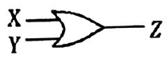
- NOT 회로
- NAND 회로
- OR 회로
- AND 회로
(정답률: 78%)
31. 어떤 측정계기의 지시값을 M, 참값을 T라 할 때 보정률은?
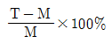
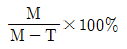
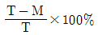
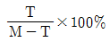
(정답률: 62%)
32. 자동화재탐지설비 수신기 내에서 교류전원을 직류전원으로 변환하는데 사용되는 소자는?
- 트렌지스터
- 다이오드
- 커패시터
- 인덕터
(정답률: 59%)
33. 5Ω, 10Ω, 25Ω 의 저항 3개를 직렬로 접속하고, 이것에 80V의 전압을 인가하였을 때 회로에 흐르는 전류 I 와 각 저항에 걸리는 전압(V5, V10, V25)으로 옳은 것은?
- I=1A, V5=10V, V10=20V, V25=50V
- I=2A, V5=10V, V10=20V, V25=50V
- I=1A, V5=15V, V10=25V, V25=40V
- I=2A, V5=15V, V10=25V, V25=40V
(정답률: 81%)
34. 3상 농형 유도전동기의 가동방법으로 틀린 것은?
- 전전압 기동법
- Y-△ 기동법
- 2차 저항법
- 기동보상기 기동법
(정답률: 70%)
35.
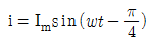
와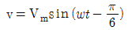
와의 위상차는 얼마인가?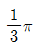
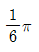
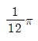
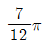
(정답률: 74%)
36. 소방설비의 표시등에 사용되는 발광 다이오드(LED)에 대한 설명으로 틀린 것은?
- 전구에 비해 수명이 길고 진동에 강하다.
- PN 접합에 순방향 전류를 흘림으로서 발광시킨다.
- 표시등 중에서 응답속도가 가장 느리다.
- 발광 다이오드의 재료로 QaAs, GaP 등이 사용된다.
(정답률: 86%)
37. 변압기의 온도상승시험방법으로 옳은 것은?
- 충격전압시험
- 가압시험
- 유도시험
- 반환부하법
(정답률: 55%)
38. 역률에 대한 설명으로 옳은 것은?
- 저항과 인덕턴스의 비
- 저항과 커패시턴스의 비
- 임피던스와 저항의 비
- 임피던스와 리액턴스의 비
(정답률: 73%)
39. PI 제어동작은 정상특성 즉, 제어의 정도를 개선하는 지상요소인데 이것을 보상하는 지상보상의 특성으로 옳은 것은?
- 주어진 안정도에 대하여 속도편차상수가 감소한다.
- 시간응답이 비교적 빠르다.
- 이득여유가 감소하고 공진값이 증가한다.
- 이득교점 주파수가 낮아지며, 대역폭이 감소한다.
(정답률: 58%)
40. 서보기구에서 직접 제어되는 제어량으로만 구성된 것은?
- 압력, 유량
- 회전속도, 회전력
- 전압, 전류
- 위치, 각도
(정답률: 69%)
3과목: 소방관계법규
41. 국가가 시∙도의 소방업무에 필요한 경비의 일부를 보조하는 국고보조 개상이 아닌 것은?
- 소방용수시설
- 소방전용통신설비
- 소방자동차
- 소방관서용 청사의 건축
(정답률: 68%)
42. 제조소등의 지위승계 및 폐지에 관한 설명 중 다음 ( ) 안에 알맞은 것은?
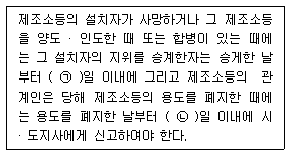
- ㉠ 14, ㉡ 14
- ㉠ 14, ㉡ 30
- ㉠ 30, ㉡ 14
- ㉠ 30, ㉡ 30
(정답률: 62%)
43. 소방시설관리업자가 기술인력을 변경 시 시∙도지사에게 첨부하여 제출하는 서류가 아닌 것은?
- 소방시설관리업 등록수첩
- 변경된 기술인력의 기술자격증(자격수첩)
- 기술인력 연명부
- 사업자등록증 사본
(정답률: 68%)
44. 제조소등에 전기설비(전기배선, 조명기구 등은 제외)가 설치된 장소의 면적이 250m2 라면, 설치해야 할 소형 수동식 소화기의 최소개수는?
- 1개
- 2개
- 3개
- 4개
(정답률: 57%)
45. 특정소방대상물 중 근린생활시설에 해당되는 것은? (단, 같은 건축물에 해당 용도로 쓰는 바닥 면적의 합계이다.)
- 바닥면적의 합계가 1500m2 인 슈퍼마켓
- 바닥면적의 합계가 1200m2 인 자동차영업소
- 바닥면적의 합계가 450m2 인 골프연습장
- 바닥면적의 합계가 400m2 인 영화상영관
(정답률: 61%)
46. 위험물안전관리법상 위험물의 정의 중 다음 ( ) 안에 알맞은 것은?
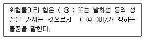
- ㉠ 인화성, ㉡ 대통령령
- ㉠ 휘발성, ㉡ 국무총리령
- ㉠ 인화성, ㉡ 국무총리령
- ㉠ 휘발성, ㉡ 대통령령
(정답률: 85%)
47. 특정소방대상물의 의료시설 중 병원에 해당하는 것은?
- 마약진료소
- 장례식장
- 전염병원
- 요양병원
(정답률: 70%)
48. 수용인원 산정방법 중 침대가 없는 숙박시설로 해당 특정소방대상물의 종사자의 수는 5명, 복도, 계단 및 화장실의 바닥면적을 제외한 바닥면적이 158m2 인 경우의 수용인원은?
- 84명
- 58명
- 45명
- 37명
(정답률: 65%)
49. 하자보수대상 소방시설 중 하자보수 보증기간이 3년인 것은?
- 유도등
- 피난기구
- 비상방송설비
- 간이스프링클러 설비
(정답률: 75%)
50. 위험물을 취급하는 건축물 그 밖의 시설 주위에 보유해야 하는 공지의 너비를 정하는 기준이 되는 것은? (단, 위험물을 이송하기 위한 배관 그밖에 이와 유사한 시설을 제외한다.)
- 위험물안전관리자의 보유 기술자격
- 위험물의 품명
- 취급하는 위험물의 최대수량
- 위험물의 성질
(정답률: 73%)
51. 소방시설공사 현장에 감리원을 배치하지 아니한 자의 벌칙 기준은?
- 100만원 이하의 벌금
- 300만원 이하의 벌금
- 500만원 이하의 벌금
- 1000만원 이하의 벌금
(정답률: 70%)
52. 화재안전기준을 달리 적용하여야 하는 특수한 용도 또는 구조를 가진 특정소방대상물 중 원자력발전소, 핵폐기물처리 시설에 설치하지 아니할 수 있는 소방시설로 옳은 것은?
- 옥내소화전설비 및 소화용수설비
- 연결송수관설비 및 연결살수설비
- 옥내소화전설비 및 옥외소화전설비
- 스프링클러설비 및 물분무등소화설비
(정답률: 77%)
53. 소방기본법상 최대 200만원 이하의 과태료 처분 대상이 아닌 것은?(관련 규정 개정전 문제로 여기서는 기존 정답인 1번을 누르면 정답 처리됩니다. 자세한 내용은 해설을 참고하세요.)
- 화재, 재난∙재해, 그 밖의 위급한 상황이 발생한 구역에 소방본부장의 피난 명령을 위반한 사람
- 소방활동구역을 대통령령으로 정하는 사람외에 출입한 사람
- 화재 또는 구조∙구급이 필요한 상황을 소방서에 거짓으로 알린 사람
- 대통령령으로 정하는 특수가연물의 저장 및 취급 기준을 위반한 자
(정답률: 48%)
54. 소방시설공사업법령상 소방공사감리를 실시함에 있어 용도와 구조에서 특별히 안전성과 보안성이 요구되는 소방대상물로서 소방시설물에 대한 감리는 감리업자 아닌 자가 감리를 할 수 있는 장소는?
- 교도소 등 교정관련시설
- 국방 관계시설 설치장소
- 정보기관의 청사
- 원자력안전법상 관계시설이 설치되는 장소
(정답률: 72%)
55. 소방시설공사업법상 소방시설공사 결과 소방시설의 하자 발생 시 통보를 받은 공사업자는 며칠 이내에 하자를 보수해야 하는가?
- 3
- 5
- 7
- 10
(정답률: 69%)
56. 위험물안전관리법령상 위험물 유별에 따른 성질의 분류 중 자기반응성 물질은?
- 황린
- 염소산염류
- 알칼리토금속
- 질산에스테르류
(정답률: 60%)
57. 제조 또는 가공 공정에서 방염처리를한 물품으로서 방염대상물품이 아닌 것은? (단, 합판∙목재류의 경우에는 설치 현장에서 방염처리를 한 것을 포함한다.)
- 카펫
- 창문에 설치하는 커튼류
- 두께가 2mm 미만인 종이벽지
- 전시용 합판 또는 섬유판
(정답률: 84%)
58. 소방시설 중 경보설비에 해당하지 않는 것은?
- 비상벨설비
- 단독경보형 감지기
- 비상방송설비
- 비상콘센트설비
(정답률: 84%)
59. 소방기본법령상 화재피해조사 중 재산피해 조사의 조사범위가 아닌 것은?
- 열에 의한 탄화, 용융, 파손 등의 피해
- 연기. 물품반출, 화재로 인한 폭발 등에 의한 피해
- 소방시설의 사용 또는 작동 등의 상황
- 소화활동 중 사용된 물로 인한 피해
(정답률: 70%)
60. 단독경보형감지기를 설치해야 하는 특정소방 대상물의 기준으로 틀린 것은?
- 연면적 800m2 미만의 숙박시설
- 연면적 1000m2 미만의 아파트등
- 연면적 1000m2 미만의 기숙사
- 수련시설 내에 있는 연면적 2000m2 미만의 기숙사
(정답률: 54%)
4과목: 소방전기시설의 구조 및 원리
61. 휴대용비상조명등의 설치기준 중 틀린 것은?
- 숙박시설 또는 다중이용업소에는 객실 또는 엽엉장안의 구획된 실마다 잘 보이는 곳에 1개 이상 설치
- 숙박시설 또는 다중이용업소에는 외부에 설치시 출입문 손잡이로부터 2m 이내 부분에 1개 이상 설치
- 지하상가 및 지하역사 보행거리 25m 이내마다 3개 이상 설치
- 영화상영관에는 보행거리 50m 이내마다 3개 이상 설치
(정답률: 64%)
62. 무선통신보조설비의 설치제외 기준 중 다음 ( ) 안에 알맞은 것은?
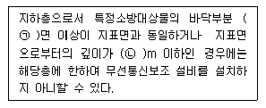
- ㉠ 2, ㉡ 1
- ㉠ 3, ㉡ 2
- ㉠ 2, ㉡ 2
- ㉠ 3, ㉡ 3
(정답률: 85%)
63. 비상벨설비 또는 자동식사이렌설비 음향장치의 설치기준 중 다음 ( ) 안에 알맞은 것은?
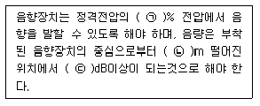
- ㉠ 150, ㉡ 3, ㉢ 90
- ㉠ 140, ㉡ 1, ㉢ 120
- ㉠ 110, ㉡ 3, ㉢ 120
- ㉠ 80, ㉡ 1, ㉢ 90
(정답률: 86%)
64. 주요구조부를 내화구조로 한 특정소방대상물의 정온식 스포트형 감지기 특종을 설치하는 경우 최소 몇 개의 이상을 설치해야 하는가? (단, 부착높이는 5m 이고 특정소방대상물의 바닥면적은 250m2 이다.)
- 9개
- 8개
- 5개
- 3개
(정답률: 46%)
65. 거실통로유도등의 설치기준 중 다음 ( )안에 알맞은 것은? (단, 거실통로에 기둥이 설치되지 않는 경우이다.)
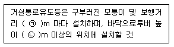
- ㉠ 20, ㉡ 1.0
- ㉠ 15, ㉡ 1.0
- ㉠ 20, ㉡ 1.5
- ㉠ 15, ㉡ 1.5
(정답률: 56%)
66. 비상방송설비 음향장치의 설치기준 중 틀린 것은?
- 실내에 설치하는 확성기의 음성입력은 1W 이상일 것
- 확성기는 각 층마다 설치하되 그 층의 각 부분으로부터 하나의 확성기까지의 수평거리가 25m 이하가 되도록 할 것
- 음량조절기를 설치하는 경우 음량조정기의 배선은 2선식으로 할 것
- 기동장치에 따른 화재신고를 수신한 후 필요한 음량으로 화재발생 상황 및 피난에 유효한 방송이 자동으로 개시될 때까지의 소요시간은 10초 이하로 할 것
(정답률: 85%)
67. 광원점등방식 피난유도선의 설치기준 중 틀린 것은?
- 바닥으로부터 높이 50cm 이하의 위치 또는 바닥 면에 설치할 것
- 피난유도 표시부는 50cm 이내의 간격으로 연속되도록 설치하되 실내장식물 등으로 설치가 곤란할 경우 1m 이내로 설치할 것
- 비상전원이 상시 충전상태를 유지하도록 설치할 것
- 피난유도 제어부는 조작 및 관리가 용이하도록 바닥으로부터 0.8m 이상 1.5m 이하의 높이에 설치할 것
(정답률: 53%)
68. 장례식장을 제외한 의료시설의 4층 이상 10층 이하에 적응성이 있는 피난기구는?
- 승강식피난기
- 완강기
- 공기안전매트
- 미끄럼대
(정답률: 55%)
69. 층수가 5층 이상으로서 연면적이 3000m2를 초과하는 특정소방대상물의 지하층에서 발화한 때에 비상방송설비의 음향장치의 경보 기준으로 옳은 것은?
- 발화층
- 발화층 및 그 직상층
- 발화층∙그 직상층 및 지하층
- 발화층∙그 직상층 및 기타의 지하층
(정답률: 65%)
70. 누전경보기 전원의 설치기준 중 다음 ( )안에 알맞은 것은?
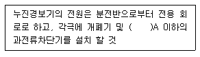
- 15
- 20
- 30
- 60
(정답률: 76%)
71. 보상식 스포트형 감지기는 정온점이 감지기 주위의 평상 시 최고온도보다 몇 ℃ 이상 높은 것으로 설치하여야 하는가?
- 10℃
- 15℃
- 20℃
- 25℃
(정답률: 81%)
72. 광전식분리형감지기의 설치기준 중 광축의 높이는 천장 등 (천장의 실내에 면 한 부분 또는 상층의 바닥하부면을 말한다) 높이의 몇 %이상이어야 하는가?
- 70
- 80
- 90
- 100
(정답률: 82%)
73. 자동화재탐지설비 경계구역의 설정기준 중 다음 ( ) 안에 알맞은 것은?
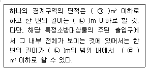
- ㉠ 600, ㉡ 50, ㉢ 1000
- ㉠ 600, ㉡ 30, ㉢ 1500
- ㉠ 1000, ㉡ 50, ㉢ 1000
- ㉠ 1000, ㉡ 30, ㉢ 1500
(정답률: 67%)
74. 누전경보기 표시등의 구조 및 기능에 대한 기준으로 틀린 것은?
- 전구는 사용전압의 130%인 교류전압을 20시간 연속하여 가하는 경우 단선, 현저한 광속변화, 흑화, 전류의 저하 등이 발생하지 아니하여야 한다.
- 전구는 2개 이상을 병렬로 접속하여야 한다. 다만, 방전등 또는 발광다이오드의 경우에는 그러하지 아니한다.
- 주위의 밝기가 300lx 인 장소에서 측정하여 앞면으로부터 3m 떨어진 곳에서 켜진 등이 확실히 식별되어야 한다.
- 전구에는 적당한 보호카바를 설치하여야 한다. 다만, 방전등의 경우에는 그러하지 아니한다.
(정답률: 48%)
75. 비상콘센트설비의 전원부와 외함 사이의 절연 내력 기준 중 다음 ( )안에 알맞은 것은?
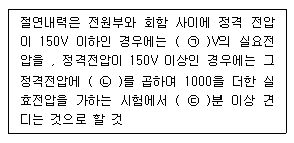
- ㉠ 500, ㉡ 1.5, ㉢ 2
- ㉠ 500, ㉡ 2, ㉢ 1
- ㉠ 1000, ㉡ 1.5, ㉢ 2
- ㉠ 1000, ㉡ 2, ㉢ 1
(정답률: 45%)
76. 비상콘센트설비에 자가발전설비를 비상전원으로 설치할 경우 그 설치기준으로 틀린 것은?
- 비상전원의 설치장소는 다른 장소와 방화구획 할 것
- 비상콘센트설비를 유효하게 20분 이상 작동시킬 수 있는 용량으로 할 것
- 비상전원을 실내에 설치하는 때에는 그 실내에 비상조명등을 설치할 것
- 상용전원으로부터 전력의 공급이 중단된 때에는 자동 또는 수동으로 비상전원으로부터 전력을 공급받을 수 있도록 할 것
(정답률: 59%)
77. 비상벨설비 또는 자동식 사이렌설비 발신기의 설치기준으로 옳은 것은? (단, 지하구의 경우는 제외한다.)
- 조작이 쉬운 장소에 설치하고, 조작스위치는 바닥으로부터 0.5m 이상 1m 이하의 높이에 설치할 것
- 특정소방대상물의 층마다 설치하되, 해당 특정소방대상물의 각 부분으로부터 하나의 발신기까지의 수평거리가 15m 이하가 되도록 할 것
- 특정소방대상물의 층마다 설치하되, 복도 또는 별도로 구획된 실로서 보행거리가 25m 이상일 경우에는 추가로 설치할 것
- 발신기의 위치표시등은 함의 상부에 설치 하되, 스 불빛은 부착 면으로부터 15˚이상의 범위 안에서 부착지점으로부터 10m 이내의 어느 곳에서도 쉽게 식별할 수 있는 적색등으로 할 것
(정답률: 63%)
78. 통로유도등의 설치기준 중 옳은 것은?
- 계단통로유도등은 바닥으로부터 높이 1m 이하의 위치에 설치하여야 한다.
- 복도통로유도등은 바닥으로부터 높이 1.5m 이하의 위치에 설치하여야 한다.
- 거실통로유도등은 바닥으로부터 높이 1m 이상의 위치에 설치하여야 한다.
- 거실통로유도등은 거실통로에 기둥이 설치된 경우에는 기둥부분의 바닥으로부터 높이 1m 이하의 위치에 설치할 수 있다.
(정답률: 60%)
79. 자동화재속보설비 속보기 외함의 최소두께 기준으로 다음 ( ) 안에 알맞은 것은?
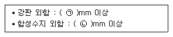
- ㉠ 1.0, ㉡ 2.5
- ㉠ 1.2, ㉡ 3
- ㉠ 1.6, ㉡ 4
- ㉠ 2.0, ㉡ 3
(정답률: 73%)
80. 무선통신보조설비 증폭기의 설치기준 중 틀린 것은?
- 전원은 전기가 정상적으로 공급되는 축전지, 전기저장장치 또는 교류전압 옥내간선으로 하고 전원까지의 배선은 전용으로 할 것
- 증폭기의 전면에는 주 회로의 전원이 정상인지의 여부를 표시할 수 있는 표시등 및 전압계를 설치할 것
- 증폭기에는 비상전원이 부착된 것으로 하고 해당 비상전원 용량은 무선통신보조설비를 유효하게 20분 이상 작동시킬 수 있는 것으로 할 것
- 무선이동중계기를 설치하는 경우에는 전파법에 따른 적합성평가를 받은 제품으로 설치할 것
(정답률: 81%)